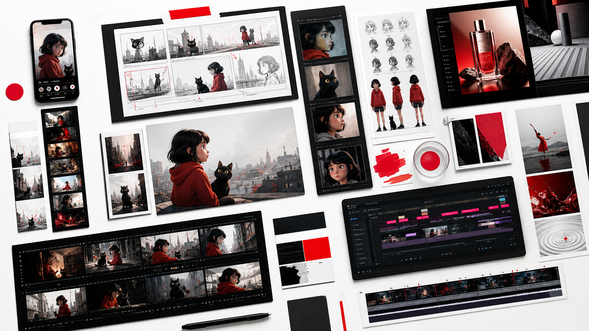
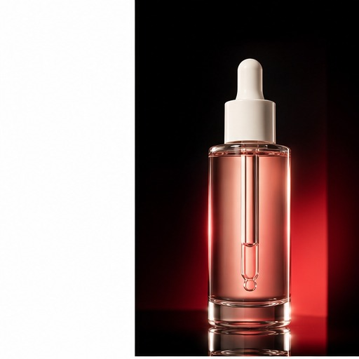
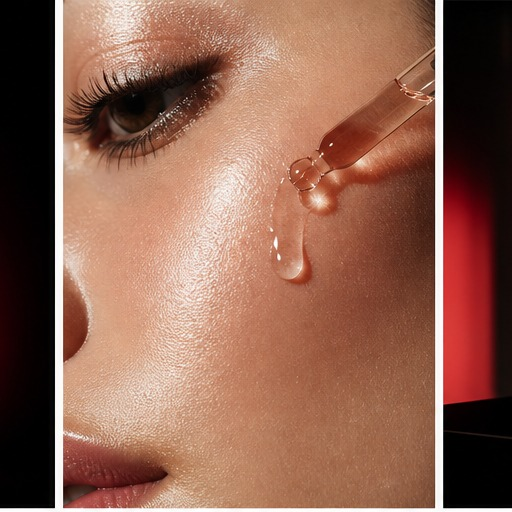
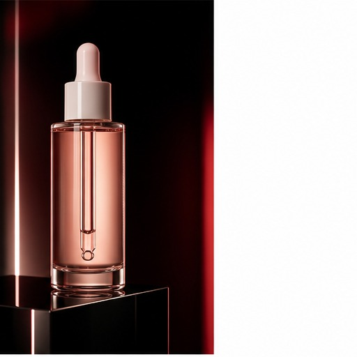
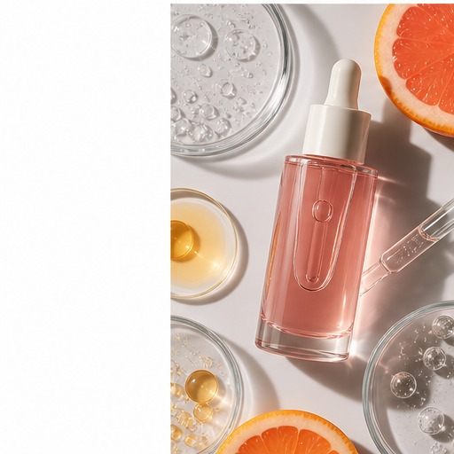
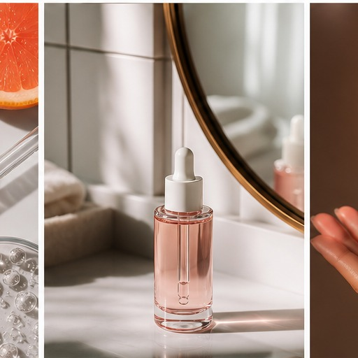
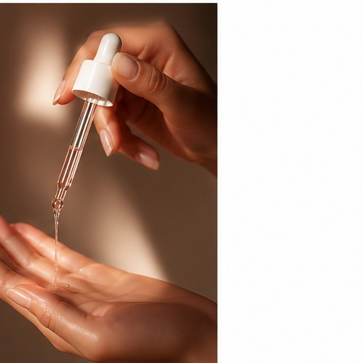

AI Advertising
Рекламные концепты, продуктовые ролики, визуальные крючки для кампаний.
Prompting / AI video / advertising / characters
Портфолио показывает не только финальные визуалы, но и управление процессом: идея, сценарий, промпты, генерация, анимация, монтаж и подготовка к публикации.

Рекламные концепты, продуктовые ролики, визуальные крючки для кампаний.
Персонажи, сцены, раскадровки, движение и визуальная последовательность.
Короткие вертикальные видео, монтажные структуры, сценарии для Shorts.
Карусели для TikTok, Instagram и Reels covers: хук, слайды, визуальная логика.
Обложки, mood-фреймы, визуальные эксперименты и связка аудио с образом.
Product carousel example

Сыворотка с эффектом свежего сияния за 60 секунд.

Если коже не хватает влаги, макияж ложится плотнее и подчеркивает текстуру.

Легкая сыворотка: увлажнение, мягкое сияние и гладкий финиш без липкости.

Гиалурон, ниацинамид и витамин C для ровного визуального тона.

2 капли утром под SPF или вечером перед кремом.

И напиши “LUMA”, чтобы получить подбор утренней рутины.
Selected case studies
Services
Концепт, визуальный хук, серия кадров, ролик 10-20 секунд и варианты под соцсети.
Внешность, характер, референс-лист, consistency-набор и сцены для дальнейшей анимации.
Сценарий, вертикальная структура, кадры, титры, монтажный ритм и export-ready версия.
Хук, структура слайдов, текст, визуальный стиль и готовая серия для TikTok / Instagram.
Production pipeline
Что нужно было создать и для какой аудитории.
Креативная гипотеза, тон, формат и визуальная логика.
Хук, структура кадров, текст, темп и CTA.
Модели, запросы, негативные промпты и параметры генерации.
Кадры, анимация, апскейл, монтаж, звук и экспорт.
Финальный ролик, выводы и что можно улучшить в следующей версии.
Contact
Для сильного первого контакта добавьте реальные ссылки на Telegram, Instagram,
TikTok, Behance или email в portfolio.config.js. Этот блок должен
вести клиента к разговору, а не к технической инструкции.